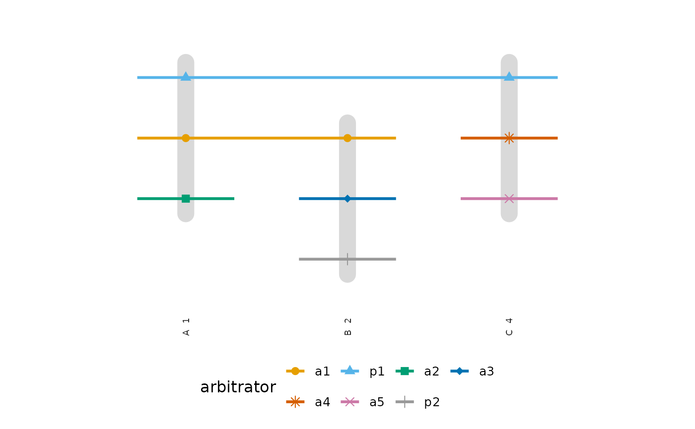

Plots the snapshot that hg_snapshot() takes at at as a hypergraph,
with plot.net_hg(): the hyperedges active then, as hulls by default or
as the incidence matrix with type = "incidence". The snapshot keeps the
hyperedge attributes and the data's names for nodes and hyperedges, so
color_by can name an attribute and the legends use the data's words.
Arguments
- x
- at
Snapshot time; defaults to the end of observation. Not used by the storyline.
- mode
Snapshot mode passed to
hg_snapshot(). Not used by the storyline.- type
"hulls"(default) or"incidence"plot the snapshot atat(seeplot.net_hg());"storyline"plots the whole history.- top
For
type = "storyline": the number of nodes with the most hyperedges to draw as lines (default8, one Okabe-Ito colour each; ties broken by name), orNULLfor every node.- start, end
For
type = "storyline": draw only the hyperedges that begin in this period, as dates for a calendar hypergraph or numbers on its clock.NULL(default) leaves the period open.- method
Deprecated. The snapshot used to be projected to a pairwise network;
plot(pairwise_network(hg_snapshot(x, at), type = method))plots that network.- ...
For
"hulls"and"incidence", arguments passed toplot.net_hg(), such ascolor_byorlabels. For"storyline",edge_labels(TRUEwrites the hyperedge and its start under each column),point_size(size of the points, default2.5) andspacing:"even"(default) puts neighbouring lines one row apart,"strength"brings two neighbouring lines closer the more plotted hyperedges their nodes share: a full row apart for none, 0.35 of a row for the largest number shared by any pair in the plot, and linearly in between, so lines that often meet run together. Spacing never changes the order of the lines.width_by = "degree"draws each line with a width that grows linearly with its node's number of hyperedges in the period, the counttopranks by, and adds a width legend;NULL(default) draws every line alike.
Details
type = "storyline" plots the whole history instead (Tanahashi and Ma
2012). Each of the top nodes with the most hyperedges is a line, from
its first hyperedge to its last, and each hyperedge is a column, in order
of its start, where a grey bar gathers the lines of its members among the
plotted nodes. The columns are spaced by order, not by elapsed time, and
are labelled with the hyperedge and its start. Lines are ordered by the
barycentre rule of Sugiyama, Tagawa and Toda (1981): along the columns the
members of each hyperedge move to the median of their current rows, and
the ordering is refined over repeated sweeps, keeping the one with the
fewest line crossings. Each line takes an Okabe-Ito colour and its points
a shape, and the legend names the nodes in decreasing order of their
number of hyperedges. Eight colours and nine shapes cycle, so up to 72
lines differ in their pair of colour and shape.
Conditions
hypergraphs_bad_input when the snapshot has no active nodes, when no
hyperedge begins between start and end, for an invalid top, for
at, mode or an argument of plot.net_hg() with type = "storyline",
for top, start or end with another type, and as plot.net_hg()
raises it; hypergraphs_deprecated (a warning) for method.
References
Tanahashi, Y., & Ma, K.-L. (2012). Design considerations for optimizing storyline visualizations. IEEE Transactions on Visualization and Computer Graphics, 18(12), 2679-2688. doi:10.1109/TVCG.2012.212
Sugiyama, K., Tagawa, S., & Toda, M. (1981). Methods for visual understanding of hierarchical system structures. IEEE Transactions on Systems, Man, and Cybernetics, 11(2), 109-125. doi:10.1109/TSMC.1981.4308636
Examples
seats <- data.frame(
case = rep(c("A", "B", "C"), each = 3),
arbitrator = c("p1", "a1", "a2", "p2", "a1", "a3", "p1", "a4", "a5"),
constituted = rep(c(1, 2, 4), each = 3),
concluded = rep(c(4, 3, 6), each = 3)
)
thg <- temporal_hypergraph(seats, node = "arbitrator", hyperedge = "case",
start = "constituted", end = "concluded")
plot(thg, at = 2.5)
 plot(thg, at = 2.5, type = "incidence", edge_labels = TRUE)
plot(thg, at = 2.5, type = "incidence", edge_labels = TRUE)
 plot(thg, type = "storyline")
plot(thg, type = "storyline")
